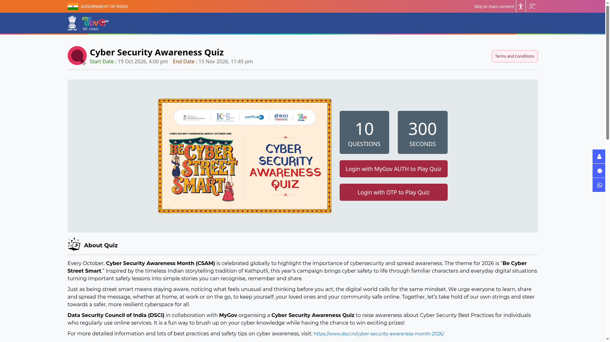
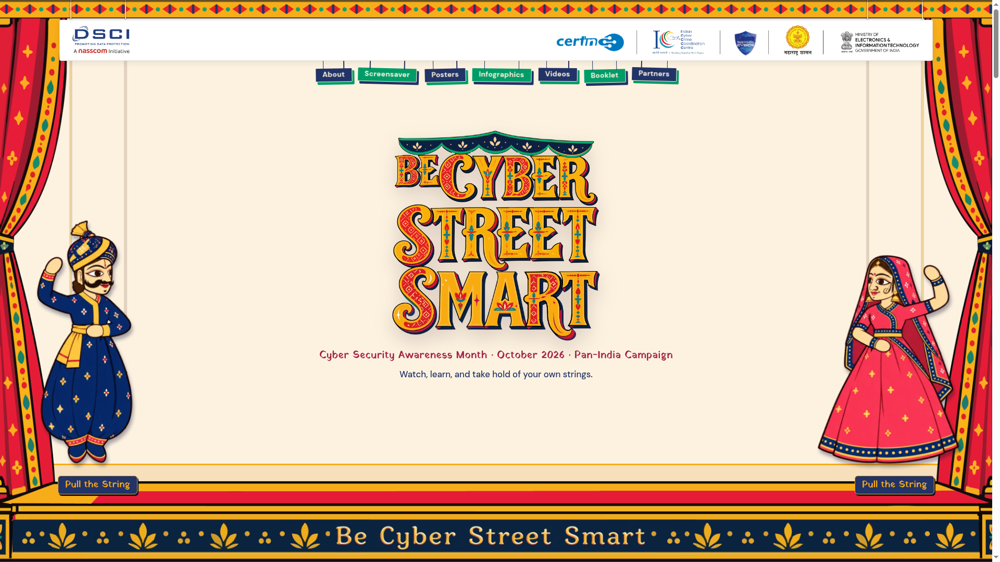

Cyber Security Awareness Quiz 2026: win Rs 4,000 from DSCI and MyGov, play by 15 November
The Data Security Council of India (DSCI) and MyGov have launched the Cyber Security Awareness Quiz for Cyber Security Awareness Month 2026, themed "Be Cyber Street Smart". It is a quick 10-question, 300-second quiz on staying safe online, and the top 5 winners get Rs 4,000 each along with a winner's certificate. The quiz runs till 15 November 2026.

Official publisher artwork hosted by its publisher. Official source. Independent guide, not affiliated or sponsored. Artwork and trademarks belong to their owners.
Who can play
- Open to all Indian citizens
- A MyGov login (MyGov AUTH or OTP login) is needed to play
- Available in both English and Hindi
What you can win (from the official page)
- Top 5 winners: Rs 4,000 each, plus a winner's certificate
- Every participant: an e-certificate of participation
Key dates (checked 20 October 2026)
- Quiz opened: 19 October 2026
- Last date to play: 15 November 2026, 11:45 pm
How to play: step by step

- Open quiz.mygov.in/quiz/cyber-security-awareness-quiz-2026 and log in with MyGov AUTH or OTP.
- Choose English or Hindi, then tap Play Quiz - the 300-second timer starts immediately, so be ready.
- Answer all 10 questions on everyday cyber safety in one sitting. You get only one attempt.
- Download your e-certificate of participation after submitting. Winners are drawn randomly from full-scorers and announced on the MyGov blog.

About the campaign
Cyber Security Awareness Month (CSAM) is observed globally every October. India's 2026 theme, "Be Cyber Street Smart", uses the Kathputli puppetry storytelling tradition to turn cyber safety lessons into familiar everyday situations. DSCI runs the campaign with CERT-In, the Indian Cyber Crime Coordination Centre (I4C) and the Ministry of Electronics and Information Technology as partners.
Sources: MyGov - Cyber Security Awareness Quiz, DSCI - Cyber Security Awareness Month 2026. Checked 20 October 2026. Explainer by AiCoN - not a government publication.